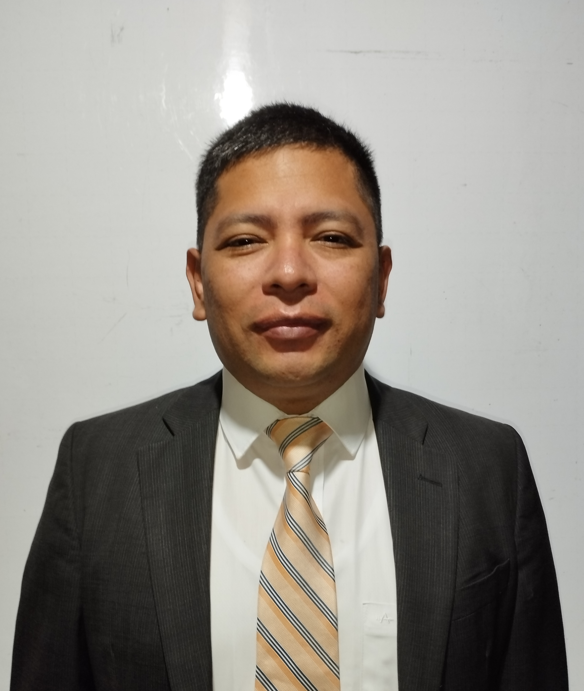

Ricardo Urizandi | WDD 130
Hello! My name is Ricardo Urizandi, and I am from Guatemala City, Central America. I am married, and we have 3 beautiful children. I really like to learn, and I also like the challenges.
Hello! My name is Ricardo Urizandi, and I am from Guatemala City, Central America. I am married, and we have 3 beautiful children. I really like to learn, and I also like the challenges.